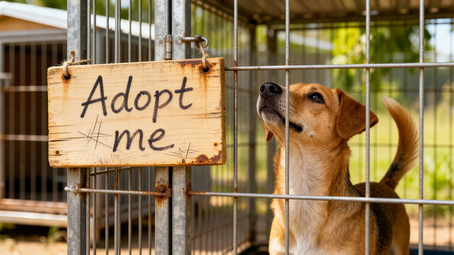

Choosing to adopt a dog from a shelter is a life-changing decision for both you and your new companion. At PurrPets, we want to help you navigate the journey of finding your "fur-ever" friend.

While every shelter is different, most follow these four standard steps to ensure a perfect match:
| Step | Action | Description |
|---|---|---|
| 1 | Application | Fill out a form about your lifestyle, home, and other pets. |
| 2 | The Meet & Greet | Spend time with the dog to see if your personalities match. |
| 3 | Home Check | Some rescues visit your home to ensure it is safe and secure. |
| 4 | Gotcha Day! | Pay the adoption fee, sign the papers, and head home! |
Remember the 3-3-3 Rule: A new dog needs 3 days to decompress, 3 weeks to learn your routine, and 3 months to feel completely at home. Patience is key!